정보처리산업기사 (2004-03-07 기출문제)
1과목: 데이터 베이스
1. 정규화의 의미로 옳지 않은 것은?
- 함수적 종속성 등의 종속성 이론을 이용하여 잘못 설계된 관계형 스키마를 더 작은 애트리뷰트의 세트로 쪼개어 바람직한 스키마로 만들어 가는 과정이다.
- 좋은 데이터베이스 스키마를 생성해 내고 불필요한 데이터의 중복을 방지하며 정보의 검색을 용이하게 할 수 있도록 허용해 준다.
- 정규형에는 제 1정규형, 제 2정규형, 제 3정규형, BCNF형, 제 4정규형, 제 5정규형 등이 있다.
- 어떠한 릴레이션 구조가 바람직한 것인지, 바람직하지 못한 릴레이션을 어떻게 합쳐야 하는지에 관한 구체적인 판단기준을 제공한다.
(정답률: 50%)

2. SQL 언어의 데이터 제어어(DCL)에 해당하는 것은?
- SELECT문
- INSERT문
- UPDATE문
- GRANT문
(정답률: 76%)
3. 데이터 모델의 구성 요소가 아닌 것은?
- 데이터 구조(structure)
- 연산(operations)
- 관계(relationship)
- 제약조건(constraints)
(정답률: 42%)
4. 키 값을 여러 부분으로 분류하여 각 부분을 더하거나 XOR하여 주소를 얻는 해싱 함수의 종류는?
- 제산(divide) 함수
- 접지(folding) 함수
- 중간제곱(mid-square) 함수
- 숫자 분석 함수
(정답률: 61%)
5. 논리적인 데이터베이스 전체의 구조를 나타내며, 데이터베이스 파일(file)에 저장되어 있는 레코드(Record)와 데이터 항목(item)의 이름을 부여하고 그들 사이에 관계의 구조를 나타내는 스키마(schema)는?
- 외부 스키마
- 개념 스키마
- 내부 스키마
- 응용 스키마
(정답률: 59%)
6. 아래 이진 트리를 후위순서(postorder)로 운행한 결과는?
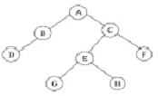
- ABCDEFGH
- DBGHEFCA
- ABDCEGHF
- BDGHEFAC
(정답률: 85%)
7. 삽입 SQL(embedded SQL)에 대한 설명으로 옳지 않은 것은?
- 응용 프로그램에 삽입되어 사용되는 SQL이다.
- SQL 문장의 식별자로서 EXEC SQL을 앞에 기술한다.
- 호스트 변수와 데이터베이스 필드의 이름은 같아도 무방하다.
- 호스트 언어의 변수는 SQL 변수와 구별하기 위하여 앞에 % 기호를 붙인다.
(정답률: 41%)
8. 자료가 아래와 같을 때, 삽입(insertion) 정렬 방법을 적용하여 오름차순으로 정렬할 경우 pass 1을 수행한 결과는?
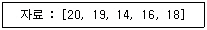
- 19, 20, 14, 16, 18
- 14, 20, 19, 16, 18
- 14, 19, 20, 16, 18
- 20, 14, 19, 16, 18
(정답률: 73%)
9. 다음 영문의 내용에 가장 적합한 용어는?
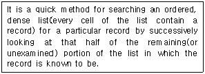
- Block Search
- Binary Search
- Sequential Search
- Interpolation Search
(정답률: 52%)
10. 해싱(Hashing) 기법에 관한 설명으로 옳은 것은?
- 버킷(bucket)이란 한 개의 레코드를 저장할 수 있는 공간으로 N개의 버킷이 모여 슬롯을 형성한다.
- 충돌(collision)이란 서로 다른 키가 동일한 주소로 해싱되는 두 키를 말한다.
- DAM 파일을 구성할 때 해싱이 사용되며, 접근 속도는 빠르나 기억공간이 많이 요구된다.
- 개방 주소법(open addressing)이란 오버플로우 발생시 이를 별도의 기억 공간에 두고 링크로 연결하여 사용하는 방법을 말한다.
(정답률: 35%)
11. 어떤 릴레이션의 애트리뷰트 개수가 4 이고, 이 릴레이션에 포함되어 있는 튜플의 개수가 5 이면 , 이 릴레이션의 카디널리티(cardinality)와 릴레이션 차수(degree)는 각각 얼마인가?
- 카디널리티 : 4, 차수 : 5
- 카디널리티 : 5, 차수 : 4
- 카디널리티 : 9, 차수 : 4
- 카디널리티 : 5, 차수 : 20
(정답률: 64%)
12. 후위 표기 방식으로 표현된 수식이 다음과 같을 때 이 수식에서 가장 먼저 처리되는 연산은?
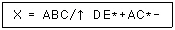
- A ↑ B
- B / C
- B ↑ C
- A * B
(정답률: 60%)
13. STUDENT(SNO, SNAME, YEAR, DEPT) 테이블에 200번, 김길동, 2학년, 전산과 학생 튜플을 삽입하는 SQL 명령으로 옳은 것은?
- INSERT STUDENT INTO VALUES (200, '김길동', 2, 전산과);
- INSERT TO STUDENT VALUES (200, '김길동', 전산과, 2);
- INSERT INTO STUDENT(SNO, SNAME, YEAR, DEPT) VALUES (200, '김길동', 2, 전산과);
- INSERT TO STUDENT(SNO, SNAME, YEAR, DETP) VALUES (200, '김길동', 2, 전산과);
(정답률: 60%)
14. Which of the following is an ordered list in which all insertions take place at one end, the rear, while all deletions take place at the other end, the front?
- queue
- deque
- stack
- graph
(정답률: 65%)
15. 데이터베이스 스키마(database schema)의 속성 중에서 한 열(column)이 가질 수 있는 값들의 집합을 무엇이라고 하는가?
- 뷰(view)
- 차수(degree)
- 도메인(domain)
- 튜플(tuple)
(정답률: 53%)
16. 현실세계의 객체를 개념적으로 표현할 때 기본적으로 개체 타입과 이들 간의 관계를 이용하도록 P. Chen이 제안한 데이터 모델은?
- 개체 관계 모델
- 개념적 데이터 모델
- 논리적 데이터 모델
- 네트워크 데이터 모델
(정답률: 73%)
17. 뷰에 대한 설명으로 옳은 것은?
- 정의된 사항을 변경할 수 있다.
- 데이터의 논리적 독립성을 제공한다
- 삽입, 삭제, 갱신 연산에 제한이 없다.
- 둘 이상의 기본 테이블에서 유도된 실제 테이블이다.
(정답률: 43%)
18. 다음 자료구조 중 성격이 다른 하나는?
- STACK
- QUEUE
- DEQUE
- TREE
(정답률: 90%)
19. E-R 모델에서 사각형은 무엇을 의미하는가?
- 관계 타입
- 개체 타입
- 속성
- 링크
(정답률: 75%)
20. 관계 데이터의 연산 표현 방법으로 원하는 결과 정보만 기술해 주는 비 절차적 언어는?
- 관계 대수
- 관계 해석
- 근원 연산
- 복합 연산
(정답률: 68%)
2과목: 전자 계산기 구조
21. STACK에 관하여 올바르게 설명한 것은?
- 복귀 번지를 저장하기 위한 메모리이다.
- PUSH 명령으로 의해 데이터를 꺼낸다.
- 1-address구조를 갖는다.
- FIFO구조를 갖는다.
(정답률: 47%)
22. 정보 전송시에 발생하는 오류의 검색 및 정정이 용이하도록 된 코드는?
- 해밍 코드
- 3-초과 코드
- 2421 코드
- 8-4-2-1 코드
(정답률: 80%)
23. 011001의 1의 보수(One's Complement)는?
- 011000
- 011010
- 100110
- 011001
(정답률: 73%)
24. 자료구조 중 먼저 입력된 자료가 먼저 출력되는 형태로 헤드(Head)와 태일(Tail)을 입출력 포인터로 사용하는 자료구조 형태는?
- 스택(Stack)
- 큐(Queue)
- 데큐(Deque)
- 포인터(Pointer)
(정답률: 56%)
25. 인에이블 또는 디스에이블 단자에 의하여 데이터의 전송 방향을 하드웨어적으로 제어하는데 사용되는 소자는?
- multiplexer
- tri-state buffer
- decoder
- 스태틱 RAM
(정답률: 31%)
26. 불 대수(Boolean algebra)가 옳지 않은 것은?
- A+A'ㆍB=A
- AㆍA=A
- A+AㆍB'=A
- Aㆍ(A+B)=A
(정답률: 39%)
27. 컴퓨터의 연산장치에서 2개의 자료 11011101, 01101101을 Exclusive-OR 연산하였을 때의 결과는?
- 01001111
- 10110000
- 11111101
- 01001101
(정답률: 61%)
28. 중앙처리장치에서 사용하고 있는 버스(BUS)의 형태에 속하지 않는 것은?
- Address Bus
- Control Bus
- Data Bus
- System Bus
(정답률: 40%)
29. 2의 보수 표현 방식으로 8비트의 기억 공간에 정수를 표현할 때 표현 가능 범위는?
- -27 ~ +27
- -28 ~ +28
- -27 ~ +(27-1)
- -28 ~ +(28-1)
(정답률: 57%)
30. 다음에서 인터럽트 작동순서가 올바른 것은?
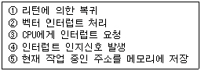
- ③-⑤-④-②-①
- ④-③-⑤-②-①
- ⑤-②-③-①-④
- ①-③-④-⑤-②
(정답률: 31%)
31. 중앙연산처리장치에서 마이크로 동작이 순서적으로 일어나게 하려면 무엇이 필요한가?
- 멀티플렉서
- 디코더
- 제어신호
- 레지스터
(정답률: 65%)
32. 8진수 23.32를 십진수로 변환 하면?(단, 소수점 4째 자리 이하 생략)
- 18.406
- 18.102
- 19.406
- 19.102
(정답률: 58%)
33. 성능을 향상시키기 위하여 주기억장치와 CPU 레지스터 사이에서 데이터를 이동시키는 중간 버퍼로 작용하는 기억장치는?
- CD
- C 드라이브
- 캐시 기억장치
- 누산기
(정답률: 80%)
34. 어소시에티브(Associative) 기억장치에 대한 설명으로 옳지 않은 것은?
- 기억된 여러 개의 자료 중에서 주어진 특성을 가진 자료를 신속히 찾을 수 있다.
- 중앙처리장치와 주기억장치의 속도 차가 현저할 때 사용된다.
- 비파괴적으로 읽을 수 있어야 한다.
- 병렬판독회로가 있어야하므로 하드웨어 비용이 크다.
(정답률: 43%)
35. 십진수 956에 대한 BCD 코드(Binary Coded Decimal)는?
- 1001 0101 0110
- 1101 0110 0101
- 1000 0101 0110
- 1010 0110 0101
(정답률: 73%)
36. 중앙처리장치에서 정보를 기억 장치에 기억시키는 것을 무엇이라 하는가?
- Load
- Store
- Fetch
- Transfer
(정답률: 52%)
37. 3초과 부호(Excess-3 code)의 설명으로 옳지 않은 것은?
- 가중치 부호이다.
- BCD 부호에 3을 더한 것과 같다.
- 10진수를 표현하기 위한 부호이다.
- 부호를 구성하는 어떤 비트 값도 0이 아니다.
(정답률: 32%)
38. 다음 중 기능이 다른 연산자는?
- COMPLEMENT
- OR
- AND
- EXCLUSIVE OR
(정답률: 71%)
39. 인스트럭션은 중앙처리장치를 이용하여 수행되는데 다음 중 명령을 읽어내는 스테이트(state)는?
- Fetch state
- Execute state
- Indirect state
- Timing state
(정답률: 56%)
40. 데이지체인(daisy-chain) 우선순위 인터럽트 방법에서 인터럽트를 발생하는 장치들의 연결 방법은?
- 모든 장치를 직렬로 연결한다.
- 모든 장치를 병렬로 연결한다.
- 직렬과 병렬로 연결한다.
- 우선순위에 따라 직렬 및 병렬로 연결한다.
(정답률: 49%)
3과목: 시스템분석설계
41. 파일 설계의 순서로 가장 적절한 것은?
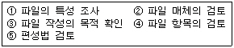
- ①, ②, ③, ④, ⑤
- ③, ④, ⑤, ①, ②
- ⑤, ③, ①, ④, ②
- ③, ④, ①, ②, ⑤
(정답률: 64%)
42. 코드 작성시 유의 사항으로 적합하지 않은 것은?
- 공통성이 있어야 한다.
- 복잡성이 있어야 한다.
- 체계성이 있어야 한다.
- 확장성이 있어야 한다.
(정답률: 76%)
43. 클래스(Class)에 관한 설명으로 옳지 않은 것은?
- 클래스는 하나 이상의 유사한 객체들을 묶어서 하나의 공통된 특성을 표현한 것이다.
- 한 클래스를 기준하여 그 기준 클래스의 상위 클래스를 서브 클래스, 하위 클래스를 슈퍼클래스라 한다.
- 클래스로부터 새로운 객체를 생성하는 행위를 인스턴스화(instantiation)라 한다.
- 객체의 유형 또는 타입(object type)이 클래스이다.
(정답률: 63%)
44. 다른 모듈 내의 외부 선언을 하지 않은 자료를 직접 참조하므로 의존도가 대단히 높고, 순서 변경이 다른 모듈에 영향을 주기 쉬운 모듈 결합도에 해당하는 것은?
- 제어 결합
- 외부 결합
- 공통 결합
- 내용 결합
(정답률: 49%)
45. 객체 지향의 기본 개념 중 데이터와 이 데이터를 조작하는 연산을 하나로 묶는 것을 의미하는 것은?
- 상속성
- 추상화
- 메소드
- 캡슐화
(정답률: 53%)
46. 아래와 같은 특징을 갖는 출력 매체 시스템은?
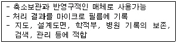
- CRT 출력 시스템
- COM 시스템
- X-Y 플로터
- 음성 출력 시스템
(정답률: 64%)
47. 코드 "34278"를 "34578"과 같이 기록하는 것으로 디지트를 잘못 읽어 한 글자를 잘못 기록하는 오류는?
- 필사오류(transcription error)
- 전위오류(transposition error)
- 생략오류(missing error)
- 임의오류(random error)
(정답률: 74%)
48. 파일 설계 단계 중 아래의 항목들은 어느 단계에 해당하는가?
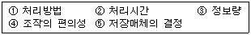
- 파일항목의 검토
- 파일의 특성조사
- 파일매체의 검토
- 파일편성법의 검토
(정답률: 34%)
49. HIPO 패키지의 3단계 구성에 포함되지 않는 것은?
- 도식 목차(visual table of contents)
- 총괄 도표(overview diagram)
- 상세 도표(detail diagram)
- 구조 도표(structure diagram)
(정답률: 40%)
50. 구조적 프로그램의 기본 구조에 해당하지 않는 것은?
- 순차(sequence)구조
- 반복(repetition)구조
- 조건(condition)구조
- 일괄(batch)구조
(정답률: 54%)
51. 출력정보의 매체화에 관한 설계에서 검토되어야 할 내용이 아닌 것은?
- 출력되는 정보의 양
- 출력장치의 특성
- 작동의 용이성
- 출력정보명
(정답률: 46%)
52. 효율적이고 우수한 시스템의 판정 기준으로 거리가 먼 것은?
- 시스템 능력
- 시스템의 신뢰성
- 시스템의 유연성
- 시스템의 구축 비용
(정답률: 79%)
53. 소프트웨어 개발주기 모델의 하나인 폭포수형(waterfall) 모델에서 개발될 소프트웨어에 대한 전체적인 하드웨어 및 소프트웨어 구조, 제어구조, 자료구조의 개략적인 설계를 작성하는 단계는?
- 타당성조사 단계
- 기본설계 단계
- 상세설계 단계
- 계획과 요구사항 분석단계
(정답률: 59%)
54. 색인순차 편성화일(indexed sequential file)의 각 구역 중 일정한 크기의 블록으로 블록화하여 처리할 키 값을 갖는 레코드가 어느 실린더 인덱스 상에 기록되어 있는가를 나타내는 정보가 수록된 구역은?
- 마스터 인덱스 구역
- 실린더 인덱스 구역
- 트랙 인덱스 구역
- 기본 데이터 구역
(정답률: 52%)
55. 마스터 파일의 내용을 변동 파일에 의해 추가, 삭제, 수정 등의 작업을 하여 새로운 파일을 만드는 처리 패턴은?
- update
- matching
- extract
- merge
(정답률: 73%)
56. 발생한 데이터를 전표상에 기록하고, 일정한 시간단위로 일괄 수집하여 전산부서에서 입력매체에 수록하는 입력 방식은?
- 분산매체화 시스템
- 턴어라운드 시스템
- 집중매체화 시스템
- 직접입력 시스템
(정답률: 57%)
57. 다음 표와 같이 부여하는 것을 무슨 코드라 하는가?
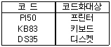
- Mnemonic code
- Block code
- Character code
- Sequence code
(정답률: 54%)
58. 시스템의 5대 기본 요소가 될 수 없는 것은?
- 입/출력
- 처리
- 제어
- 보수
(정답률: 76%)
59. 시스템 문서화의 효과로 거리가 먼 것은?
- 시스템 개발 후 시스템의 유지 보수가 용이하다.
- 시스템 개발팀에서 운용팀으로 인계 인수가 쉽다.
- 시스템 개발 중 추가 변경에 따른 혼란을 방지한다.
- 시스템 에러 발생시 책임 소재를 분명히 한다.
(정답률: 67%)
60. 입력 자료의 어떤 항목 내용이 논리적으로 정해진 범위 내에 있는가를 체크하는 방법은?
- 유효 범위 체크(Limit check)
- 체크 디짓 체크(Check digit check)
- 형식 체크(Format check)
- 균형 체크(Balance check)
(정답률: 78%)
4과목: 운영체제
61. 수행 중인 프로그램에서 0(zero)으로 나누는 연산이나 스택의 오버플로우 등과 같은 오류시 발생하는 인터럽트는?
- 입/출력 인터럽트
- SVC(SuperVisor Call) 인터럽트
- 프로그램 검사 인터럽트
- 기계 검사 인터럽트
(정답률: 50%)
62. 대기 중인 작업중 현재 헤드위치에서 가장 짧은 헤드 이동을 요청하는 작업을 먼저 서비스하는 디스크 스케줄링 알고리즘은?
- SSTF 스케줄링
- SCAN 스케줄링
- FCFS 스케줄링
- C-SCAN 스케줄링
(정답률: 57%)
63. 교착상태(Deadlock)의 4가지 필요조건에 해당하지 않는 것은?
- 자원은 사용이 끝날 때까지 이들이 갖고 있는 프로세스로부터 제거할 수 있다.
- 프로세스가 다른 자원을 기다리면서 이들에게 이미 할당된 자원을 갖고 있다.
- 프로세스들이 그들이 필요로 하는 자원에 대해 배타적인 통제권을 요구한다.
- 프로세스의 환형 사슬이 존재해서 이를 구성하는 각 프로세스는 사슬 내의 다음에 있는 프로세스가 요구하는 하나 또는 그 이상의 자원을 갖고 있다.
(정답률: 42%)
64. 프로세스들을 우선 순위에 따라 시스템 프로세스, 대화형 프로세스, 일괄처리 프로세스 등으로 상위, 중위, 하위 단계의 단계별 준비 큐를 배치하는 CPU 스케줄링 기법은?
- 다단계 큐 스케줄링
- 다단계 피드백 큐 스케줄링
- SRT 스케줄링
- HRN 스케줄링
(정답률: 47%)
65. 운영체제의 발전 과정으로 옳은 것은?
- 분산처리 → 실시간처리 → 일괄처리
- 일괄처리 → 분산처리 → 실시간처리
- 분산처리 → 일괄처리 → 실시간처리
- 일괄처리 → 실시간처리 → 분산처리
(정답률: 42%)
66. 주기억장치에 들어와 있는 페이지에 타임 스탬프를 찍어 그 시간을 기억하고 있다가 가장 먼저 들어와 있던 페이지를 교체하는 페이지 교체 알고리즘은?
- FIFO 알고리즘
- 최적 페이지 대치 알고리즘
- LRU 알고리즘
- LFU 알고리즘
(정답률: 60%)
67. SCAN 디스크 스케줄링 기법의 특징이 아닌 것은?
- SSTF(SHORTEST SEEK TIME FIRST)의 개선 기법이다.
- 도착 순서에 따라 실행 순서가 고정된다는 점에서 공평하다.
- 진행방향상의 가장 짧은 거리에 있는 요청을 먼저 수행한다.
- 실린더 지향 전략이다.
(정답률: 38%)
68. 기억 장소의 초기 상태가 보기의 그림과 같을 때 12K를 필요로 하는 프로세스와 18K를 필요로 하는 프로세스가 순서대로 도착하여 기억장소의 배당을 요구했을 때 최적적합 배당방식을 적용한 결과는?
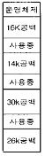
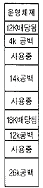
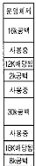
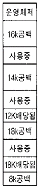
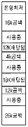
(정답률: 55%)
69. RR(ROUND ROBIN) 스케줄링 기법의 특징이 아닌 것은?
- 할당된 자원과 처리기의 소유권은 수행중인 프로세스의 제어권한이다.
- FIFO 스케줄링기법을 선점기법(PREEMPTIVE)으로 구현한 것이다.
- 대화식 시분할 시스템에 적합한 방식이다.
- 빈번한 스케쥴러의 실행이 요구된다.
(정답률: 21%)
70. 운영체제의 형태에 따른 분류 중 사용자는 컴퓨터들의 종류를 알 필요가 없으며, 원격지 자원들을 그들의 지역 자원에 접근하는 방식과 동일한 방식으로 접근하도록 처리하는 형태의 운영체제는?
- 네트워크 운영 체제(Network Operating System)
- 통신 운영 체제(Communication Operating System)
- 지역 운영 체제(Local Operating System)
- 분산 운영 체제(Distributed Operating System)
(정답률: 32%)
71. UNIX 시스템의 특징이 아닌 것은?
- 대화형의 시분할 시스템
- 계층적 파일 시스템
- Stand alone 시스템
- 네트워킹 시스템
(정답률: 59%)
72. CPU 스케줄링에 있어서 선점 알고리즘에 해당하는 것은?
- RR(Round Robin)
- HRN(Highest Response-ratio Next)
- SJF(Shortest Job First)
- FCFS(First Come First Service)
(정답률: 63%)
73. UNIX 명령어 중 파일에 대한 액세스(읽기, 쓰기, 실행) 권한을 설정하는데 사용하는 명령어는?
- chmod
- chown
- mkdir
- ls
(정답률: 70%)
74. 다음의 인터럽트 동작원리 중 문맥교환(CONTEXT-SWITCHING)이 발생하는 구간은?
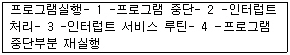
- 1
- 2
- 3
- 4
(정답률: 48%)
75. 페이징 기법에 관한 설명 중 옳지 않은 것은?
- 가상 기억장치 관리 기법의 하나이다.
- 프로그램을 서로 다른 크기의 블록 단위로 묶어서 관리하는 기법이다.
- 페이지 크기가 클수록 적재되는 프로그램의 수가 감소된다.
- 페이지 크기가 작을수록 페이지 테이블의 공간이 더 많이 필요하다.
(정답률: 36%)
76. 프로세스(process)에 대한 설명으로 거리가 먼 것은?
- 실행중인 프로그램이다.
- 프로시저가 활동 중인 것을 의미한다.
- 비동기적 행위를 일으키는 주체이다.
- 디스크 내에 파일 형태로 보관되어 있는 프로그램을 의미한다.
(정답률: 61%)
77. 유닉스의 i-node에서 파일 정보를 볼 수 없는 것은?
- 파일의 크기
- 최종 수정시간
- 소유자
- 파일 경로명
(정답률: 29%)
78. 버퍼링과 스풀링의 차이점을 비교한 것이다. 틀린 것은?
- 버퍼링은 일반적으로 하드웨어적 구현이지만 스풀링은 소프트웨어적 구현이다.
- 버퍼링은 일반적으로 단일작업 단일사용자이지만 스풀링은 다중작업 다중사용자이다.
- 버퍼링에서 일반적으로 버퍼의 위치는 주기억 장치이지만 스풀링에서 스풀의 위치는 디스크이다.
- 버퍼링은 스택 또는 큐방식의 입출력을 수행하지만 스풀링은 스택방식으로 입출력을 수행한다.
(정답률: 38%)
79. 입출력장치 구동기(device driver)에 관한 설명으로 옳지 않은 것은?
- 새로운 입· 출력 장비가 개발될 때마다 운영체제 내의 장치 구동기를 수정하여 작성해야 한다.
- 입· 출력 장비 업체가 개발하여 공급할 수 있다.
- 입· 출력 장비를 제어하는 일종의 제어 프로그램이다
- 입· 출력을 실행하는 일종의 서브루틴이다.
(정답률: 47%)
80. UNIX 운영체제에서 사용자가 운영체제와 대화하기 위한 기반을 제공하는 프로그램으로 명령어를 해석하고, 오류의 원인을 알려주는 역할을 하는 것은?
- 커널(Kernel)
- 셸(Shell)
- 시스템 호출(System call)
- 응용(Application) 프로그램
(정답률: 60%)
5과목: 정보통신개론
81. 다음은 ISDN의 기능을 열거한 것이다. 서로 대응되는 관계로 적합하지 않은 것은?
- NT1: OSI 물리계층을 지원하는 망종단장치
- NT2: 전송을 위한 교환 및 다중화 기능을 수행
- TA : 회선종단으로 가입자선로의 물리적 종단기능을 제공
- TE1: ISDN 기능을 가진 표준 단말기
(정답률: 44%)
82. ITU-T 권고안 중 V 시리즈는 어느 내용을 권고하는가?
- 텔레마틱서비스 단말장치
- 디지털망을 이용한 데이터통신
- 공중전화망을 이용한 데이터통신
- 종합정보통신망(ISDN)
(정답률: 40%)
83. MODEM의 설명으로 가장 옳은 것은?
- 기억장치의 일종이다.
- 사용자 프로그램의 일종이다.
- 데이터의 오류를 검사 및 교정하는 장치이다.
- 신호의 변조와 복조를 담당하는 장치이다.
(정답률: 81%)
84. RS-232C, RS-449, V.24, X.21은 어느 규격에 속하는가?
- 다양한 전송로 규격
- 단말과 모뎀간의 인터페이스 규격
- 교환설비간 인터페이스 규격
- 모뎀과 교환설비 간의 인터페이스 규격
(정답률: 44%)
85. 8위상 변복조를 사용하는 모뎀의 데이터 신호 속도가 4800[bps]일 때 변조속도는 몇 보[baud]인가?
- 600
- 1600
- 2400
- 4800
(정답률: 47%)
86. 근거리 통신망(LAN)의 이용효과와 거리가 가장 먼 것은?
- 자원(Data, Program, Device)의 공유
- 복잡한 과학기술 계산의 고속처리
- 하드웨어 및 소프트웨어의 경비절감
- 자원(자료, 프로그램, 장비)의 효율적인 Backup
(정답률: 53%)
87. 패킷교환망의 특징이 아닌 것은?
- 회선이용 효율의 극대화
- 전송품질이 우수하며 고신뢰성
- 정보를 패킷단위로 전송
- 컴퓨터와 단말사이에 직접 통신회선 설정
(정답률: 50%)
88. 종합정보통신망(ISDN)에 대한 설명으로 부적당한 것은?
- 음성 및 비음성 서비스를 포함한 광범위한 서비스를 제공한다.
- 기능에 의해 기본통신 계층, 네트워크 계층, 통신처리 계층, 정보처리 계층으로 분류된다.
- 64Kbps의 디지털 기본 접속기능을 제공한다.
- OSI 참조모델에 정의된 계층화된 프로토콜 구조가 적용된다.
(정답률: 34%)
89. 정보통신 System의 구성요소 중 정보 전송계 요소에 맞지 않는 것은?
- 신호변환장치
- 전송회선
- 중앙처리장치
- 통신제어장치
(정답률: 69%)
90. 정보통신이 발달하게 된 주원인이 아닌 것은?
- 통신기술의 발전
- 정보량의 증대
- 인구의 증가
- 컴퓨터의 개발
(정답률: 68%)
91. 다음 경로설정 알고리즘 중 네트워크 정보를 요구하지 않으며, 송신처와 수신처 사이에 존재하는 모든 경로로 패킷을 전송하는 방식은?
- Flooding
- Random Routing
- Fixed Routing
- Adaptive Routing
(정답률: 51%)
92. LAN을 구성하는 매체로서 광섬유케이블의 특성에 대한 설명이 잘못된 것은?
- 광대역 저손실이고 잡음에 특히 강하다.
- 동축케이블에 비해 감쇄현상이 심하다.
- 성형, 링형의 형태에도 사용이 가능하다.
- 동선류의 전송매체에 비해 멀티드롭 접속이 어렵다.
(정답률: 59%)
93. 다음 중 정보통신망에 해당하지 않는 것은?
- SUN
- ISDN
- LAN
- VAN
(정답률: 64%)
94. LAN에서 사용되는 매체 액세스 제어(Access Control) 기법이 아닌 것은?
- 토큰버스
- CDMA/CD
- CSMA/CD
- 토큰링
(정답률: 52%)
95. 통신망 간의 접속장치 중 OSI 7계층의 네트워크 계층까지를 담당하면서 통신망의 경로선택 등을 전담하는 장치는?
- 리피터(Repeater)
- 브리지(Bridge)
- 라우터(Router)
- 모뎀(Modem)
(정답률: 63%)
96. 프로토콜에 대한 설명으로 옳은 것은?
- 시스템 간 정확하고 효율적인 정보전송을 위한 일련의 절차나 규범의 집합이다.
- 아날로그 신호를 디지털 신호로 변환하는 방법이다.
- 자체적으로 오류를 정정하는 오류제어방식이다.
- 통신회선 및 채널 등의 정보를 운반하는 매체를 모델화한 것이다.
(정답률: 61%)
97. 데이터통신 시스템이 최초로 이용된 분야는?
- 의료분야
- 군사분야
- 행정분야
- 사무자동화분야
(정답률: 75%)
98. 다음 중 정보통신 관련 국제표준기구가 아닌 것은?
- ITU
- ISO
- IEC
- IITA
(정답률: 51%)
99. 정보통신이 가지는 특성으로 적합하지 않은 것은?
- 정보통신은 전기통신을 포함한다.
- 정보의 형태는 문자나 부호만이 가능하다.
- 정보의 저장과 가공, 처리분야 전반에 걸친 통신을 의미한다.
- 부수되는 입출력장치나 기타의 기기를 접속해야 한다.
(정답률: 66%)
100. 통신망에 접속된 컴퓨터와 단말장치 간에 효율적이고 원활한 정보를 정확히 교환하기 위하여 정보통신 시스템이 갖추어야 할 제어기능과 방식을 총칭하여 무엇이라 하는가?
- 전송제어
- 에러제어
- 흐름제어
- 동기제어
(정답률: 42%)